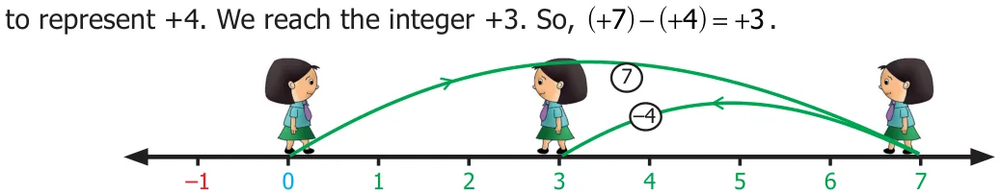
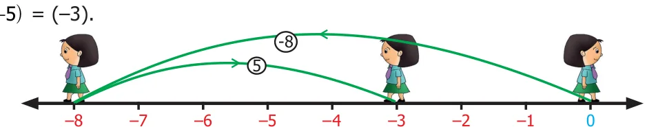
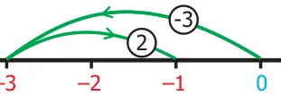
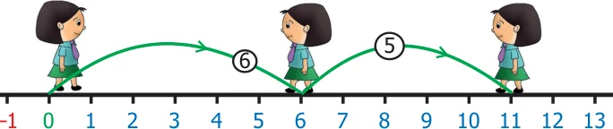

Let us learn subtraction of integers using number line. Let us try to subtract integers using the number line activity we studied earlier. We should follow the same instructions as before but whenever we need to subtract, we turn towards the negative side. To subtract (+4) from (+7)
We start at zero facing positive direction. Moves 7 units forward to represent +7 then turn towards the negative side for the operation of subtraction and move +4 units forward

\(- 1\)
Let us find ( - ) \(- -\) ( ). We start at zero facing positive direction. Move 8 units backward to represent \((- 8)\). Then turn towards the negative side and move 5 units backwards. We reach \(- 3\). We have \((- 8) - -\) ( )

\(- 8 - 7 - 6 - 5 - 4 - 3 - 2 - 1\) Fig. 1.14
Now, let us learn subtraction of integers in another way. Observe the following patterns :
\(7 - 2 = 5\) ; \(7 - 1 = 6\) ; \(7 - 0 = 7\)
What will happen if we extend this to negative integers?
\(7 - - (1)= 8\) ; \(7 - - (2)= 9\); \(7 - -\) ( 3)=10
We shall see some more patterns.
\(20 - 2 =18\) ; \(20 - 1 =19\) ; \(20 - 0 = 20\); \(20 - - (1)= 21\); \(20 - - (2)= 22\)
We can see from the above patterns that while subtracting consecutive negative integers from 7 and 20 the difference increase consecutively.
It is clear that subtraction of negative integers gives increase in the difference. For example \(7-(-2) =9\). Hence, subtraction of -2 is equivalent to addition of 2, which is the additive inverse of -2. That is, \(7+2 =9\). So, to subtract a negative integer from an integer we add the additive inverse of the integer which is to be subtracted.
For example, subtract \((- 5)\) from 7.
\(7 - (- 5)\)
To subtract (-5) we can add additive inverse of \((- 5)\) that is 5 with 7
Therefore, \(7 - (- 5) = 12\)
Try these
- Do the following by using number line.
- \((- 4) - (+3)\) (ii) \((- 4) - (- 3)\)
- Find the values and compare the answers.
- \((- 6) - (- 2)\) and \((- 6) + 2\)
- \(35 - (- 7)\) and \(35 + 7\)
- \(26 - (+10)\) and \(26 + (- 10)\)
- Put the suitable symbol <, > or = in the boxes.
- \(- 10 - 8\) Ƚ \(- 10 +8\) (ii) \((- 20) + 10\) Ƚ\((- 20) - (- 10)\)
- \((- 70) - (- 50)\) Ƚ \((- 70) - 50\) (iv) \(100 - (+100)\) Ƚ \(100 - (- 100)\)
- \(- 50 - 30\) Ƚ \(- 100 + 20\)
Note
Every subtraction statement has a corresponding addition statement. For example, \(8 - 5 = 3is a\) subtraction statement. This can be seen as the addition statement \(3+5 = 8\) In the same way, \((- 8) - - (5)= - 3\) is a subtraction statement which can be written as the addition statement \((- 8)= (- 3)+( - 5)\).
Example 1.10 Subtract the following using the number line.
- \(- 3 - (- 2)\) (ii) \(+6 - (- 5)\)
Solution
- \(- 3 - (- 2)\)
To subtract \(- 2\) from \(- 3\) using number line,

\(- 4 - 3 - 2 - 1 1 2 3\) Fig. 1.15
Therefore, \(- 3 - (- 2) = - 3 + 2 = - 1\)
- \(+6 - (- 5)\)
To subtract \(- 5\) from 6 using number line,

\(- 1\) Fig. 1.16
Therefore, \(+6 - (- 5) = +6 + 5 = 11\).
Now, let us see how to subtract negative integers using additive inverse.
Example 1.11
- Subtract \((- 40)\) from 70 (ii) Subtract\((- 12)\) from \((- 20)\)
Solution
- \(70 - -\) ( 40) (ii) \((- 20) - -\) ( 12)
\(= 70 +\) (additive inverse of \(- 40\) ) = \((- 20)+\) (additive inverse of \((- 12)\) )
\(= 70 + 40 = (- 20)+12 = 110\). \(= - 8\)
Example 1.12
Find the value of : (i) \((- 11) - -\) ( 33) (ii) \((- 90) - -\) ( 50)
Solution
- \((- 11) - -\) ( 33) (ii) \((- 90) - -\) ( 50)
= \((- 11)+(+33) = - 90 - - (50) = 22 = - 90 +50 = - 40\)
Example 1.13
Chitra has ₹ 150. She wanted to buy a bag which costs ₹ 225. How much money does she need to borrow from her friend?
Solution
Amount with Chitra = ₹ 150 Cost of bag = ₹ 225 Amount to be borrowed \(= 225 - 150\)
= ₹ 75
Example 1.14
What is the balance in Chezhiyan's account as a result of a purchase for ₹ 1079, if he had an opening balance of ₹ 5000 in his account?
Solution
Opening balance = ₹ 5000 Debit amount = ₹ 1079 ( - ) Balance amount = ₹ 3921
Example 1.15
The temperature at Srinagar was \(- 3 ^{\circ} C\) on Friday. If the temperature decreases by \(1 ^{\circ} C\) next day, then what is the temperature on that day?
Solution
The temperature at Srinagar was \(- 3 ^{\circ} C\) on Friday. If the temperature decreases by \(1 ^{\circ} C\) then, temperature on the next day \(= - 3 ^{\circ} C - 1 ^{\circ} C = - 4 ^{\circ} C\)
Example 1.16
A submarine is at 300 feet below the sea level. If it ascends to 175 feet, what is its new position?
Solution
Initial position of submarine \(= 300\) feet below
\(= -300\) feet
Distance ascended by submarine \(= 175\) feet
\(= + 175\) feet
New position of submarine = \((- 300) + (+175)\)
\(= - 125\)
That is, the submarine is 125 feet below the sea level.
1.3.1 Properties of Subtraction
We can test whether all the properties of integers that are true for addition still hold for subtraction or not. Recall that subtraction of two whole numbers did not always result in a whole number. However, this extended form of integers is enough to make sure that the difference of two integers is also an integer. For example, \((- 7) - -\) ( 2)is an integer, \((- 5)+14\) is an integer and \(0 - -\) ( 8) is an integer. From these examples we observe that the collection of integers is "closed", that is, the difference of two integers is always an integer. Therefore, for any two integers a, b ; \(a - b\) is also an integer.
What about the other properties? Can you see that \((- 2) - - (5)= 3\) but \((- 5) - - (2)= - 3\) Also, \(10 - -\) ( 5)=15but \((- 5) - 10 = - 15\). Therefore, changing the order of integers in subtraction will not give the same value. Hence, the commutative property does not hold for subtraction of integers. Therefore, for any two integers a, b ; \(a - b ^{1} b - a\). Try these
- Fill in the blanks.
- \((- 7) - -\) ( 15)=____ (ii) \(12 -\) ___ =19 (iii) ___ \(- -\) ( 5)=1
- Find the values and compare the answers.
- \(15 - 12\) and \(12 - 15\) (ii) \(- 21 - 32\) and \(- 32 - (- 21)\)
Think
Is assosiative property true for subtraction of integers? Take any three examples and check.